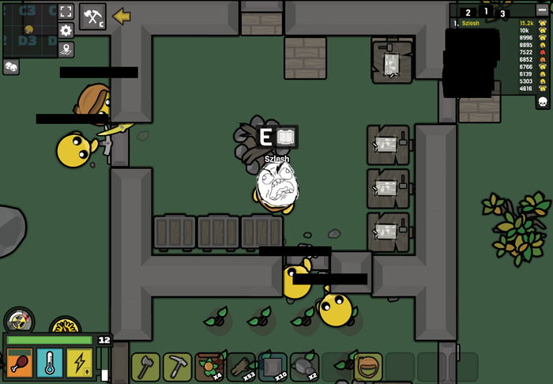
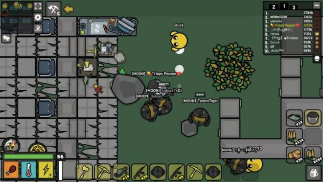

Introduction
Devast.io is a post-apocalyptic survival multiplayer .io game where you scavenge for resources, craft powerful weapons, build fortified bases, and fight both ghouls and other players in a radioactive wasteland. Created by LapaMauve (the developer behind Starve.io), this browser-based survival game combines resource management, base building, crafting progression, and PvP combat into an intense experience. Whether you are trying to survive your first night or aiming to dominate the leaderboard with Tesla armor and laser weapons, this guide covers everything you need to know.
Getting Started

Controls: Use WASD or Arrow Keys to move, Mouse to aim, Left Click to attack/gather, Right Click to drop items, Shift to sprint, C to open crafting, E/F to pick up items, Enter to chat.
Survival Stats: You have five core stats to manage — Health (depletes when attacked or hungry), Hunger (drains at 1.2 units/sec, replenished by food), Cold (drains only at night without campfire), Stamina (used for sprinting and attacking), and Radiation (increases near uranium or in the city). Understanding these stats is crucial for survival.
Resources: The main resource types are Wood (from trees), Stone (from rocks), Iron (smelted into shaped metal), Sulfur (from fridges, safes, or ore), and Uranium (for endgame gear). Food includes Oranges, Tomatoes, Raw/Cooked Steak, and Tomato Soup. Always prioritize gathering wood and stone first.
Basic Tips
1. Optimize Your First 60 Seconds: As soon as you spawn, immediately start gathering wood (20-30) and stone (10-15) while moving toward a defensible position near water and metal nodes. Craft a stone hatchet first, then a campfire for warmth at night.
2. Build Your Base Before Night Falls: You have approximately 16 minutes before ghouls become hostile. Build a base with at least 3 doors, 2 firepits (for food storage), and floors inside to prevent enemies or ores from spawning inside. Keep your base compact — a 9×9 layout works well.
3. Prioritize the Workbench and Research Bench: Place 2-3 workbenches early and unlock stone walls/doors. Your next major goal should be the Research Bench, which unlocks Metal Axe, Metal Pickaxe, and eventually the Smelter for processing iron into shaped metal.
4. Manage Your Inventory Carefully: Your limited inventory slots are your most valuable asset. Store low-value items at base and keep slots free for high-value materials (Metal, Sulfur, Uranium). Cook meat immediately and discard rotten food.
5. Door Trick for Defense: When ghouls attack at night, open a door, stand inside, then close it. This lets you fight one ghoul at a time through the doorway — a critical early-game survival technique.
Advanced Strategies

The Resource Gambit: Most players prioritize weapons first. Instead, invest your first Metal/Copper into reinforced walls and doors. This seems suboptimal, but advanced defense lets you safely AFK at night while your furnaces and collectors run passively, giving you a massive resource advantage over aggressive players who skip base defenses.
Zone Denial Strategy: Claim a chokepoint location (narrow land bridge or ridge with high-value nodes) and build a wide, horizontally-spread fortified zone rather than tall walls. Place traps and barricades on approaches leading to your zone. Patrol the perimeter regularly to eliminate threats before they consolidate.
Lapabot Defense: Once you craft Alloys (from Sulfur + Iron via Smelter), craft Lapabots to auto-repair your walls. Place them in a trapped square so they repair walls without blocking your movement. This completely neutralizes ghoul attacks.
Progression Timeline: Follow this day-by-day plan: Day 1 — Build base, get workbenches. Day 2 — Get Metal Axe/Pickaxe via Research Bench. Day 3 — Build Smelter, craft Alloys and Lapabots. Day 4 — Craft Sniper rifle and Radiation Mask. Day 5 — Raid the Tesla room in the city for Laser Submachine. Day 6 — Craft Tesla Armor.
Pro Tips

Tesla Room Raid: The Tesla room is in the top-middle building of the city. Use a spear to breach in, break the two logic gates in the center, plant dynamite, and get out quickly. If you have high ping, use a Radiation Suit and hammer instead. This unlocks access to Tesla Armor and Laser weapons.
Weapon Progression: Start with Stone Pickaxe → Metal Axe → Sniper Rifle → Laser Submachine. The Laser Submachine requires a powered Tesla Bench (4+ Energy Cells) to craft. Pair it with SWAT Suit before going for full Tesla Armor.
Gasoline Management: Each Gasoline in the Smelter produces 4 Alloys, 2 Shaped Uranium, and 13 Shaped Metal. Always put one Gasoline in the Smelter first, then do other tasks while it processes. Find Gasoline in barrels on city outskirts where fewer players venture.
SWAT Suit Priority: Many new players think getting a laser gun makes them invincible. It does not. You can still be killed by skilled players with conventional guns or teams of savages. Always craft the SWAT Suit before going full aggressive.
Battle Royale Mode: The BR mode features a shrinking zone that forces encounters. Weapons spawn much more frequently from buildings in this mode. Focus on positioning and loot priority rather than base building.
FAQ
How do I deal with radiation? Craft a Radiation Mask (requires Uranium) or full Radiation Suit for extended city exploration. Radaway items can also reduce radiation levels quickly.
When do ghouls become aggressive? Normal ghouls become hostile after 16 minutes (Day 2). Fast ghouls after 32 minutes (Day 3). Armored ghouls arrive around Day 4. Always have your base defenses ready before these timers.
What is the best base location? Near water sources, close to metal/sulfur nodes, ideally using the map border as part of your walls. Avoid building inside abandoned houses as they attract savages.
How do I get shaped metal? Break fridges, safes, and sinks in abandoned houses for instant shaped metal. Alternatively, mine iron ore and smelt it in a firepit.
Can I play with friends? Yes! Use the chat (Enter key) to communicate. Teaming up is strongly recommended for mid-to-late game progression, especially for raiding the Tesla room.
Conclusion
Devast.io rewards patient, methodical players who prioritize defense and resource efficiency over aggressive early-game combat. Follow the day-by-day progression plan, master the door defense trick, and invest in your base before chasing endgame weapons. Once you have Lapabots auto-repairing your walls and a Laser Submachine in hand, you will be ready to dominate the wasteland. Good luck, survivor!